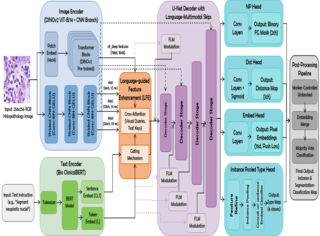
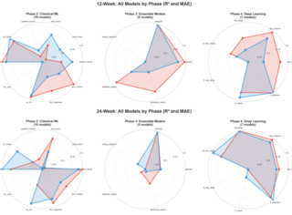

Research
My Research interests span Medical image Analysis, Computational Biology, Computational Pathology, and Computer Vision. I am particularly interested in problems that are grounded in Clinical Reality, where the work has to hold up not just technically but in a setting where it actually affects people. Below are my Publications and Ongoing Projects.
Publications
-
ICCV 2025

DebrisVision: Bridging the Synthetic-to-Real Gap for Enhanced Underwater Debris Analysis
International Conference on Computer Vision (CVAUI & AAMVEM Workshop), 2025
-
MICCAI 2026

CIPS-Net: A Comprehensive Framework for Histopathology Image Analysis
29th Medical Image Computing and Computer Assisted Intervention (MICCAI), 2026 [*Under Review]
-
IEEE CONNECT 2026

12th IEEE International Conference on Electronics, Computing and Communication Technologies 2026 [*Under Review]
† Equal contribution
Ongoing Research Projects
- HuMAR - Working on developing efficient and scalable text-instructed vision-language model for multimodal and multitasking Human Centric detection.
- PDS with H&E slides - Working on predicting the P53 Deficiency Score (PDS) of breast cancer patients using H&E stained histopathology slides, leveraging deep learning and computational pathology techniques to improve prognostic accuracy and treatment planning.
- Hyperbolic CLIP for Real and Fake MRI Detection - Working on distinguishing between Real and Fake (Synthetic) MRI images using CLIP in Hyperbolic Geometry, leveraging the advantage of Hyperbolic space to capture Hierarchical and Complex relationships in the data, and improving the robustness of the model in detecting subtle differences between Real and Synthetic Medical images.
Research Competitions
- Top 10 - Track 1, IEEE EMBS Biomedical & Health Informatics (BHI) Conference Data Competition, 2025
- Top 22 - Multimodal AI4TB Challenge (MAIC), Seoul National University Hospital, 2024
- Top 3 - Intel AI Hackathon 2024, IEEE Indicon at IIT Kharagpur, 2024